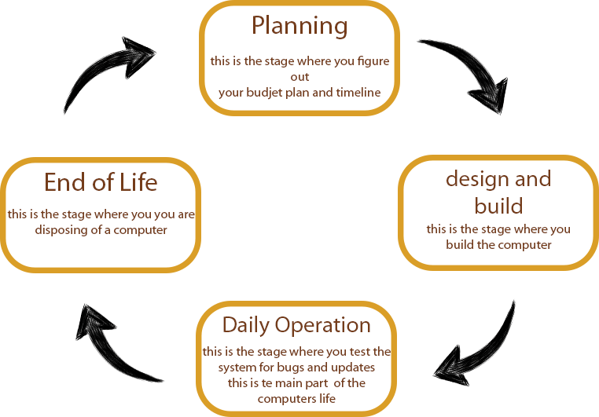

This website is made to help you understand the lifecycle of a computer system, starting with the planning to build it, and ending with its death
Here is a image to help show the lifecycle of a Computer

Planning
Planning is a vital part of making a computer system. Planning makes sure that the final computer is without issues, but a lot of problems can occur that people have to plan for,
Such as->
- The scale of the project
- Possible Risks
- Price/Budget
- Plausability
For more Information, Please click here
InfoDesign and Build
The design and building part of a computer's life cycle is made up of 4 parts
These parts are:
- Components/software
- Whats the use?
- Work station
- Layout
For more Information, Please click here
InfoDaily operations
Daily Operations is in regards to how the computer is used throughout the main course of its life, during its life a list of things can happen to it that will need to be fixed
that list includes
- password issues
- updates
- security
- malfunctions
For more Information, Please click here
InfoEnd of Life
in the last stage of its life, it's important you dispose of your computer properly, but before the disposal here's a list of things you should do
- wiping hardware
- taking apart
- thing about recycling
- proper disposal
For more Information, Please click here
Info